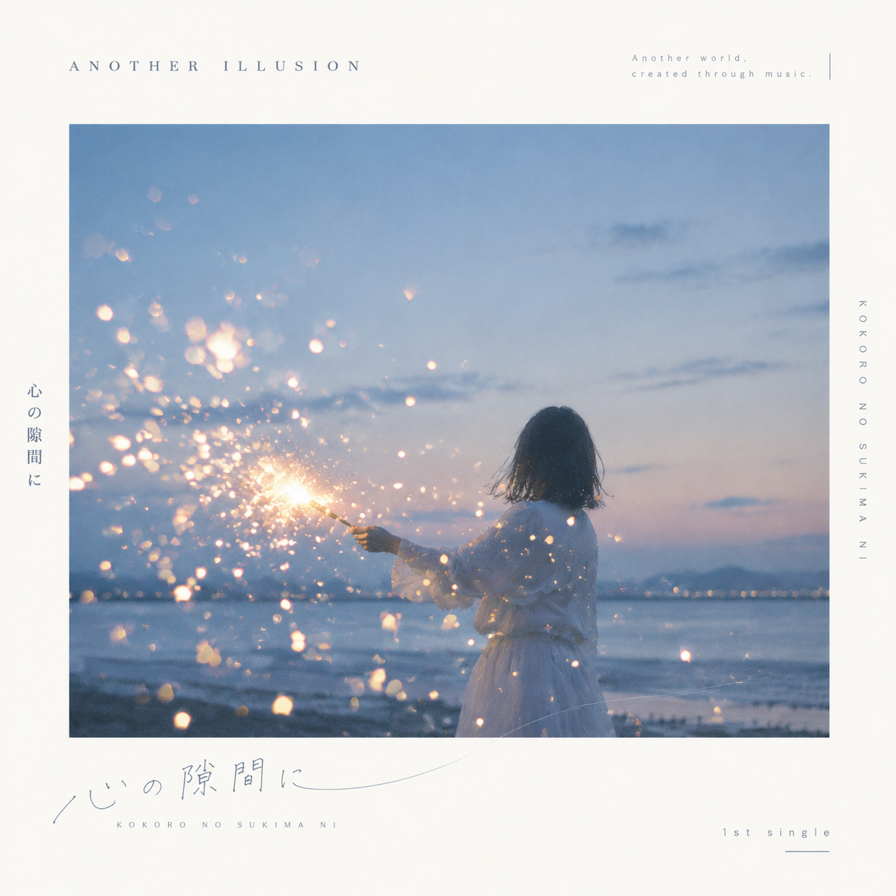

01 / MUSIC
Latest Release
1ST SINGLE
心の隙間に
Kokoro no Sukima ni
夏の夜、花火、届かなかった想い。
心に残った“隙間”を音楽に。
0:00
0:00
02 / PROFILE
Another Illusion
A.I. = Another Illusion
現実と幻想のあいだ。
言葉と音が重なる場所。
そこにある「もう一つの世界」を、音楽として描く。
人が言葉を紡ぎ、AIとともに音を形にする。
その境界から生まれる音楽プロジェクト。
その境界から生まれる音楽プロジェクト。
Follow the illusion.